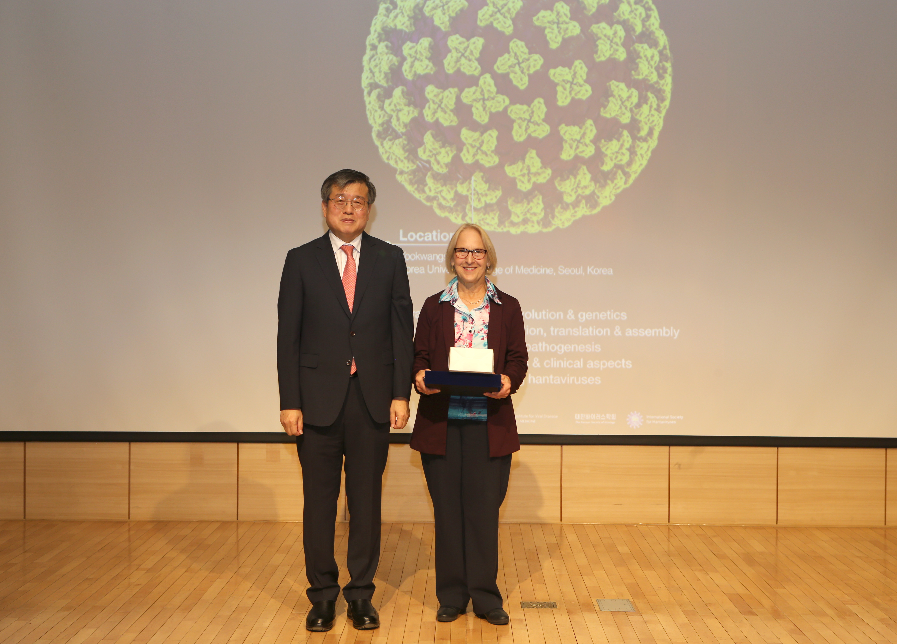

Society archive
Former Meetings
A concise archive of International Hantavirus Conference milestones.
International meetings
Triennial exchange across hantavirus research communities.
The International Society for Hantaviruses was founded in 1989 with its first meeting in Seoul, Korea. This archive now includes photo and abstract-book material recovered from the Webpage asset package.
Lectureship awards
Two lectureship awards frame the scientific legacy of each triennial ICH.
At each triennial ICH, the Ho-Wang Lee Lifetime Achievement Award recognizes a senior hantavirologist for exceptional contributions to hantavirus research, while the Joel M. Dalrymple Memorial Award honors an early- to mid-career researcher whose innovative and forward-looking work reflects the legacy of Dr. Dalrymple at the U.S. Army Medical Research Institute of Infectious Diseases.
Conference record
Twelve ICH editions in one consolidated record.
| No. | Year | Location | Abstract Book | Photos |
|---|---|---|---|---|
| XII | 2023 | Seoul, Republic of Korea | International Conference on Hantaviruses | |
| XI | 2019 | Leuven, Belgium | International Conference on HFRS, HPS & Hantaviruses | |
| X | 2016 | Colorado, USA | Abstract Book | |
| IX | 2013 | Beijing, China | Abstract Book | |
| VIII | 2010 | Athens, Greece | - | - |
| VII | 2007 | Buenos Aires, Argentina | - | - |
| VI | 2004 | Seoul, Republic of Korea | - | - |
| V | 2001 | Annecy, France | - | - |
| IV | 1998 | Atlanta, USA | - | - |
| III | 1995 | Helsinki, Finland | - | - |
| II | 1992 | Beijing, China | - | - |
| I | 1989 | Seoul, Korea | - | - |
Photos

{kind=link}
{kind=link}
{kind=link}
{kind=link}
{kind=link}
{kind=link}
{kind=link}
{kind=link}
{kind=link}
{kind=link}